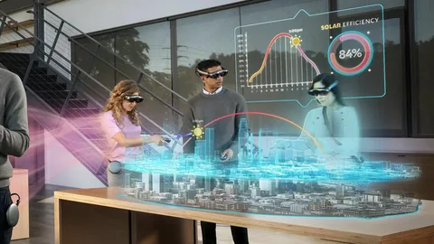
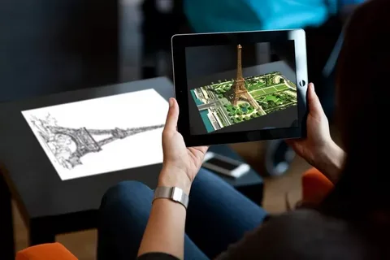

технология полного погружения в виртуальный мир за счёт устройств: VR-очков, наушников, перчаток. Например, в тренажёрах для обучения пилотов с помощью VR создаётся визуализация реальных мест, ландшафтов и погодных условий.

Дополненная реальность (AR) — технология наложения цифровых объектов на предметы реального мира. Например, когда пользователь наводит камеру смартфона на реальный фасад здания и видит на нём анимацию с его историей.
